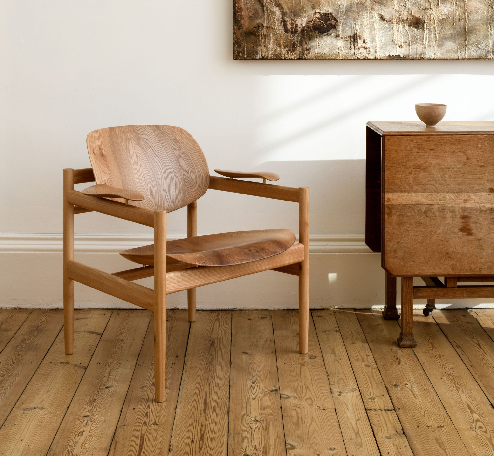

Welcome to Artisan Furniture
Discover Exquisite Handcrafted Furniture Tailored Just For You.
Explore Our CollectionDiscover Exquisite Handcrafted Furniture Tailored Just For You.
Explore Our CollectionArtisan Furniture stands as a testament to the timeless craft of creating exquisite handcrafted furniture. Rooted in a passion for woodworking and a commitment to preserving artisanal traditions, we are more than just a furniture company; we are storytellers, weaving narratives of craftsmanship into each meticulously crafted piece. Established with the vision of blending functionality with artistry, we redefine the way people experience their living spaces. Our journey begins in the skilled hands of master craftsmen who breathe life into every design, infusing it with character and individuality. We take pride in our dedication to quality, with each piece being a labor of love that reflects the essence of artisanal excellence. As a team of artisans, designers, and enthusiasts, we believe in the power of bespoke creations that tell a unique story—your story.

At Artisan Furniture, our offerings extend beyond mere furniture; we provide a bespoke journey into the world of handcrafted elegance. Immerse yourself in a collection that transcends the ordinary, where every piece is a symphony of craftsmanship and functionality. Our curated selection encompasses a diverse range of furniture, meticulously designed to cater to various tastes and preferences. Discover the warmth and character of our living room pieces, from hand-carved wooden sofas to intricately designed coffee tables that serve as both functional and aesthetic focal points. Our dining collections redefine the art of gathering, featuring custom-made tables and chairs that transform every meal into a cherished experience. Bedrooms become sanctuaries with our crafted bed frames, wardrobes, and bedside tables, where each element contributes to a harmonious and personalized space.
